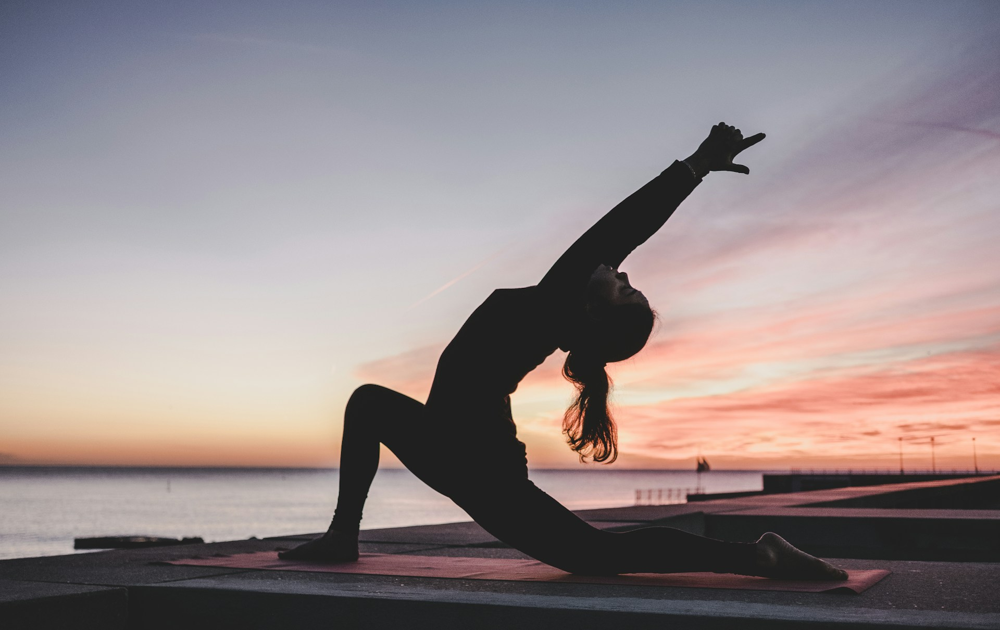

Yoga isn't just about finding inner peace and zen; it can also be an exciting way to bond with your friends! While most yoga classes focus on individual poses or partner exercises, imagine the fun of teaming up with three of your pals to explore some unique 4-person yoga poses. That’s right, we're diving into yoga that requires not one, not two, but four people! And let me tell you, it’s a blend of teamwork, balance, flexibility, and maybe a little bit of giggling.
So, roll out your yoga mats, grab three buddies, and let's explore some 4 person yoga poses that will have you stretching, balancing, and having a blast!
Before we get into the nitty-gritty of these poses, let’s talk about why you’d want to do this in the first place. I mean, yoga by yourself is already challenging, right? Well, doing yoga with three others takes the experience to a whole new level! Here’s why it’s worth trying:
Team Bonding: Nothing says "teamwork" like balancing on each other’s shoulders (safely, of course).
Deeper Trust: You literally have to trust that your friends won’t let you fall! It’s an exercise in balance, communication, and letting go of control.
Get Fit Together: Stretching, toning, and strengthening your muscles—times four!
Lots of Laughs: With four people in the mix, you’re bound to stumble a bit. But that’s part of the fun!
Instagram-Worthy: Because, let’s be real, who doesn’t want to show off their group yoga adventures?
Sounds fancy, right? It is! The Flying Four is like an acro-yoga move but with four people lifting and balancing in a stunning display of strength and trust. It’s also one of the most rewarding and beautiful poses to pull off.
Base Position: Two people should lie on the ground, flat on their backs, with their heads slightly apart but feet facing each other. They’ll be the "bases."
Flyers: The other two yogis will be the "flyers." They’ll stand at the feet of the bases and, when ready, lean forward into a flying plank. The bases will place their feet on the flyers' hips to hold them up.
Lift Off: Using the strength of their legs and core, the bases will slowly lift the flyers into the air while the flyers engage their cores and maintain balance.
Hold It: Once everyone is steady (and after any initial wobbles), hold the position for a few breaths.
Come Down Slowly: Gently lower the flyers back to the ground, and switch roles if you want.
This pose requires patience and communication. Also, a sense of humor because you’re probably going to wobble or topple a few times before nailing it.
It’s not as daunting as it sounds, but it's a great way to build core strength and work on alignment. Plus, if you’ve ever wanted to plank on top of someone planking, now’s your chance!
Bottom Plank: Start with one person in a regular plank position on their elbows, keeping the core tight and the back straight.
Second Layer: The second person gets into a plank position and places their hands on the back of the first person’s ankles or calves.
Third Layer: The third person repeats this by placing their hands on the second person’s ankles, and so on.
Final Layer: The fourth person planks on top of the third person’s legs or back, forming a stacked plank tower.
Hold the Pose: Try to hold the stack for at least 15-30 seconds, but don't be surprised if it feels like an eternity!
Pro Tip: Make sure everyone is in a straight line, or you’ll end up looking like a yoga version of Jenga. If the stack collapses, hey, that’s all part of the fun.
The downward dog is a classic yoga pose, and now you get to turn it into a pyramid of sorts. This is a great pose for stretching the hamstrings and shoulders while working as a team to create a visually stunning formation.
Bottom Layer: Two people start in a regular downward dog position, side by side, but with enough space between them to support the next level.
Middle Layer: The third person places their hands on the lower backs of the bottom two and lifts their legs onto their backs, entering a supported downward dog.
Top Layer: The fourth person carefully climbs onto the backs of the middle layer, creating a final downward dog on top of the structure.
Hold It Together: The key is to maintain balance and not let anyone tip over. Stay strong, breathe deeply, and enjoy the moment of teamwork.
This one is more of a sitting pose but still requires coordination and trust. The Circle of Trust is perfect for stretching, relaxing, and creating a great moment of connection with your group.
Start Seated: All four people sit in a circle, facing outward, with their backs against each other.
Link Arms: Each person reaches out and links arms with the people next to them.
Slow Lean Back: Together, slowly lean back so that each person is supporting the other, creating a balanced and stable sitting position.
Stretch and Breathe: Hold this pose for a few moments, breathing deeply and allowing the stretch to relax your body.
If you haven’t jumped on the protein ice cream bandwagon yet, the Protein Ice Cream Ninja Creami is your ticket to flavor town. It’s an easy, fun way to make delicious, protein-packed desserts that’ll satisfy your sweet tooth and support your body transformation goals. Plus, the combinations are endless, so you can keep things exciting every time you whip up a new batch.
4-person yoga poses are more than just a workout; they’re a chance to connect with friends, share some laughs, and create lasting memories. Whether you're mastering the Flying Four or trying to stay balanced in a Circle of Trust, these poses bring a new level of fun and teamwork to your yoga practice. So, grab your crew, stay safe, and most importantly, have fun!